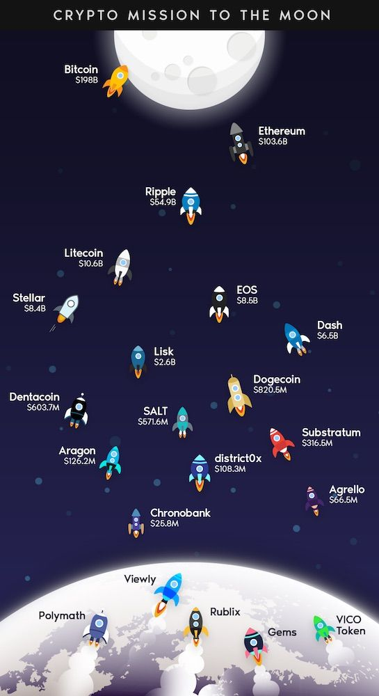
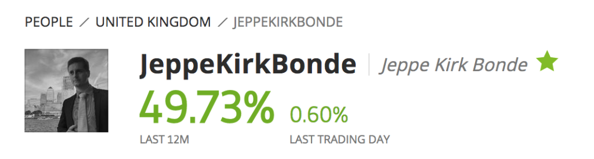

Closing Positions to Fund Home Renovations
This isn't a video I wanted to make, but here goes! I've got to take about €2,000 out of eToro because I'm renovating a flat and I've basically cost myself a lot of unexpected expenses by using cowboy builders... To be fair, they were suggested to me by someone I thought knew better, but there we go...
The Grand Designs problem
You know those Grand Designs episodes where the couple decides to project manage the build themselves? You always see the host wince as they proclaim their decision — fast-forward six months and the marriage is on the rocks, they're sleeping in a burnt-out bus in the back garden, and everything that could go wrong has gone wrong.
That's been my experience with some of the builders. Experience is so so valuable. If I'd known four months ago what I know now, I'd have saved myself about €11,000. That's a lot of money, and as a result, I've needed to raid my eToro account. At least I've got something to raid!
Closing Ethereum at a Loss
I had to close one of my ETH positions — 0.299 ETH bought on 11 November last year, worth $948. It was a $50 loss compared to when I bought it. Not the end of the world, but I'd wanted to hold for five years and just see how it went long-term. As it is, I've held it for a bit over a year, and it's been quite a ride up and down since then.

The real lesson about investing
Such an important part of investing is to have a stable enough income so that you never have to touch your investments at the wrong time. I didn't plan well enough, but I really didn't expect the bills I've suddenly had to face either.
I've still got €1,519 invested in Ethereum, which I'll leave alone.
Thomas Parry-Jones — Still Incredible
I wanted to make an entire video just to say thank you to Thomas Parry-Jones. His stats are astonishing — basically 49% profit for the year with no losing months — that's quite a feat :) He's made me $714 since I started copying him in February 2024. Truly unbelievable consistency. Cheers Thomas!

Goodbye (For Now) to Amit Kupp and Fund Manager Zek
This is the hard part. I had to stop copying both Amit Kupp and Fund Manager Zek. Not because they were doing badly — Amit had two slight loss years but the rest were winners, and Fund Manager Zek was similarly consistent. I stopped because I need the cash and I couldn't withdraw from Thomas Parry-Jones (that $20,000 minimum again).
Closing Amit Kupp returned about $1,069 (my investment plus profits). Closing Fund Manager Zek brought me to €2,032 available — just enough for what I owe the builder who saved my renovation.
Finding good people
A note again to myself — when you find good, honest, skilled people — whether traders or builders — hold onto them.
A Personal Note
My dad's been in hospital for five weeks, and it's been a really difficult time. My mum's not been well at all either. One of my viewers, William L — I won't share your full name — sent me the kindest message recently. I showed it to my mum. Thank you, William. It really brightened a tough period.
Want to see my current eToro statistics? View my profile on eToro →